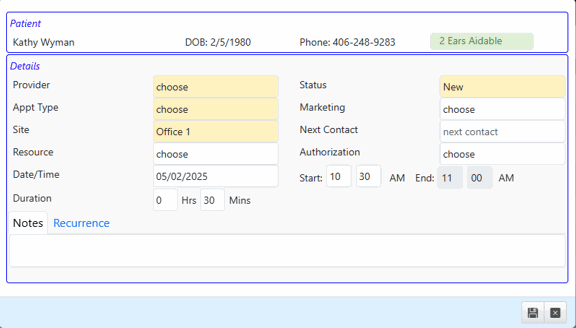
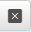
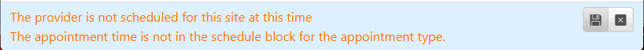
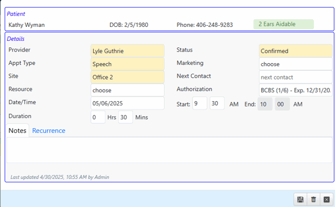
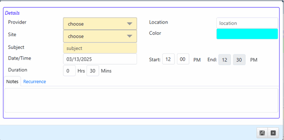
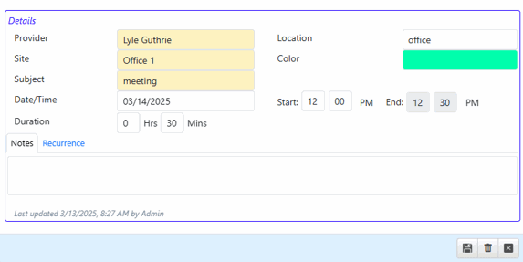

Scheduling and Editing Appointments
Schedule Patient Appointment

- Drag the patient name to the calendar on the desired date and time to schedule an appointment.
- Required fields are indicated in yellow.
- Click the Save icon to save, or X icon

to abandon changes and close the details window.
 Note - if there are conflicts when you try to Save the appointment (provider not scheduled, incorrect block type, etc), those will be displayed at the bottom in the blue section, and the appointment will not initially save. You can either edit the appointment details to avoid the conflict OR click Save again to save the appointment anyway.
Note - if there are conflicts when you try to Save the appointment (provider not scheduled, incorrect block type, etc), those will be displayed at the bottom in the blue section, and the appointment will not initially save. You can either edit the appointment details to avoid the conflict OR click Save again to save the appointment anyway.

Edit Patient Appointments
- Double click on a scheduled patient appointment to open the Appointment Details window.

- Make desired changes to the patient appointment.
- Required fields are indicated in yellow.
- Click the Save icon to save changes, or Cancel icon to abandon changes.
- Delete the appointment by clicking the Delete icon .
- Note - if there are conflicts when you try to Save the appointment (provider not scheduled, incorrect block type, etc), those will be displayed at the bottom in the blue section, and the appointment will not initially save. You can either edit the appointment details again to avoid the conflict OR click Save again to save the appointment anyway.
Edit an existing recurring Patient Appointment
- Note: Once a recurring Patient Appointment has been created and saved, you cannot change the recurrence Interval and End settings. If you wish to change the recurrence settings, you should delete the remainder of the series and create a new one.
- Double click on an appointment to open the Appointment Details window.
- You can ONLY change fields in the Details section. You cannot change the Recurrence settings.
- Changing other details, such as Provider, Appointment Type, time, etc will only change the selected appointment in the series. It will not be changed for other appointments in the series.
- If you need to make changes to remainder of the series, or just want to remove the remaining appointments, click the End Series icon
 . This will delete the selected appointment and remaining ones in the series. You can then recreate a new series with the changes needed. A confirmation message will display at the bottom. Click the icon again to delete, or Cancel icon to abandon changes.
. This will delete the selected appointment and remaining ones in the series. You can then recreate a new series with the changes needed. A confirmation message will display at the bottom. Click the icon again to delete, or Cancel icon to abandon changes.

- To delete only the selected appointment, click the Delete icon. A confirmation message will display at the bottom. Click the delete icon again to delete, or Cancel icon to abandon changes.

Schedule Non-Patient Appointments

- Double-click on calendar on the desired date and time to open the New Schedule Item window.
- Required fields are indicated in yellow.
- Click on the Color field to select a different color for the appointment, if desired.
- At least one Provider and one Site must be selected to create appointment.
- Click the Save icon to save, or X icon to abandon changes and close the details window.
Edit Single Non-Patient Appointments
- Double click on a scheduled non-patient appointment to open the Schedule Details window.

- Make desired changes to the appointment.
- Click the Save icon to save changes, or Cancel icon to abandon changes.
- Delete the appointment by clicking the Delete icon .
- Note - if there are conflicts when you try to Save the appointment (provider not scheduled, incorrect block type, etc), those will be displayed at the bottom in the blue section, and the appointment will not initially save. You can either edit the appointment details again to avoid the conflict OR click Save again to save the appointment anyway.
Edit Recurring Non-Patient Appointments
- Note: Once a recurring Non-Patient Appointment has been created and saved, you cannot change the recurrence Interval settings. If you wish to change the interval settings, you should delete the remainder of the series and create a new one.
- Double click on an appointment to open the Appointment Details window.
- You can ONLY change the Subject and Notes in the Details section. You cannot change the Recurrence settings.
- If you need to make changes to remainder of the series, or just want to remove the remaining appointments, click the Delete icon . This will bring up a message at the bottom asking if you wish to delete only the selected appointment or the entire series.

- Click the icon to delete only the selected appointment.
- Click the icon to delete the selected appointment and remaining ones in the series. You can then recreate a new series with the changes needed.